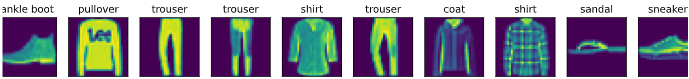

Jaromir Saloni
Project 0:
Part 1: Linear Neural Networks for Classification
Question 1: Visualize 10 Images from the dataset
Ok, so here we visualized it

- Hyperparameter analysis
- 2.1 Try to use different learning rates, plot how validation loss changes.
- 2.2 Try to use different batch sizes, how validation and training loss changes?
Question 3: Explain the overflow and underflow problems in softmax computation,
\( \hat y_j = \frac{\exp(o_j)}{\sum_k \exp(o_k)} \).
One possible solution to this problem is to subtract
\( \bar{o} \stackrel{\textrm{def}}{=} \max_k o_k \) from all entries,
explain how this potentially can solve the overflow problem.
Is this solution perfect or you think this solution may cause some other problems (e.g., NaN)?
Part 2: Multilayer Perceptrons (MLPs)
Question 1: Come up with an example that the gradients vanish for the sigmoid activation function.
Question 2: Give it a try to add one hidden layer, show how it affects the results. What if adding a hidden layer with one single neuron, what’s the results? Please discuss what you get and why.
Question 3: What’s the memory footprint for training and prediction in the model described in the above example?
Part 3: Basic Convolutional Neural Networks (LeNet)
Question 1: Use different epochs (5, 10, 20) to train your LeNet, plot the training loss, validation loss, and validation accuracy of each training process, and discuss how changing training epochs affects the performance.
Question 2: Modifying LeNet: Replace average pooling with max-pooling, replace the Sigmoid layer with ReLU. After doing so, redo the above experiment (Using different epochs 5, 10, 20), plot the training loss, validation loss, and validation accuracy for each training process. Discuss the changes compared to the results of original LeNet training.
Question 3: Use a different dataset, MNIST(PyTorch, TensorFlow), to do training and plot training loss/accuracy and test accuracy, and discuss the results.